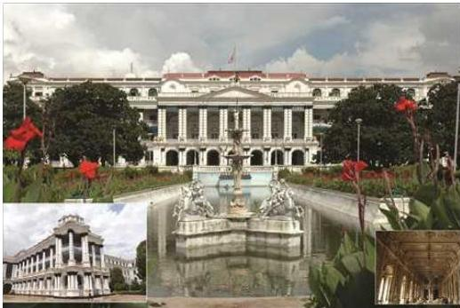
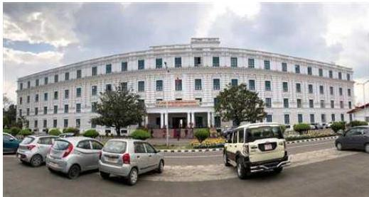
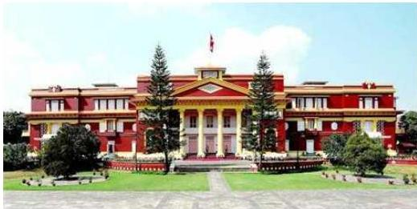

नेपालको सार्वजनिक प्रशासन

सिंहदरबार, काठमाडौँ
राज्य शासन प्रणालीको उषाकालदेखि नै सार्वजनिक प्रशासनको अस्तित्व रहेको पाइन्छ । देशमा अमनचयन कायम गर्नु र जनतालाई राज्यबाट निर्धारित सेवा र सुरक्षा प्रदान गर्दै राज्य र नागरिकबीचको सम्बन्ध सुदृढ गर्नु सार्वजनिक प्रशासनको प्रमुख उद्देश्य एवम् दायित्व हो । नेपालको इतिहासलाई अध्ययन गर्दा काठमाडौँ उपत्यकामा गोपाल वंश, महिषपाल वंश, किराँत वंश, लिच्छवि वंश, मल्ल वंश र शाह वंशले राज्य गरेको; पश्चिम नेपालमा खस वंशले राज्य गरेको, दक्षिण-पश्चिम तराई क्षेत्र कपिलवस्तुमा शाक्य वंश, दक्षिण-पूर्व तराई क्षेत्रमा कर्णाट वंशीहरूले राज्य गरेको पाइन्छ । नेपाल मण्डल राज्यको राजधानी काठमाडौँ, खस राज्यको राजधानी सिँजा, कपिलवस्तुको राजधानी तिलौराकोट
नेपाल परिचय/१२९
र कर्णाटवंशीको डोय (तिरहुत) को राजधानी सिम्मैनगढ थियो । साथै, दाङमा थारू जाति तथा जनकपुरमा मिथिलाभाषीले शासन गरेको पनि पाइन्छ । प्राचीन नेपालमा भौगोलिक टाकुरा, क्षेत्र र भूभागमा स-साना राज्यहरू भएका र ती राज्यमा आ-आफ्नै प्रकारको प्रशासन प्रणाली रहेको पाइन्छ । श्री ५ बडामहाराजधिराज पृथ्वीनारायण शाहले स-साना भुरेटाकुरे राज्यलाई एकीकरण गरी विशाल नेपाल निर्माणपश्चात् व्यवस्थित सार्वजनिक प्रशासनको विकास भएको पाइन्छ । नेपालको प्रशासनलाई समयावधिका दृष्टिकोणले चार समूहमा विभाजन गरी अध्ययन गर्न उपयुक्त हुन्छ ।
(१) प्राचीन काल (एकीकरणपूर्व) (२) मध्यकाल (राणाशासनको अन्तसम्म) (३) आधुनिक काल (प्रजातन्त्रको स्थापनापछि लोकतन्त्रको स्थापनासम्म) (४) उत्तरआधुनिक काल (लोकतन्त्रको स्थापनापछि हालसम्म)
४.१ प्राचीन काल (वि.सं. १८२५ अगाडि)
सार्वजनिक प्रशासनको प्राचीन काल एकीकरणपूर्वको काल भएकाले यसले काठमाडौँ, खस प्रदेश, कपिलवस्तु, डोय राज्य, मिथिला प्रदेश, थारू क्षेत्रको प्रशासनलाई समेट्नुपर्ने हुन्छ । सरल शब्दमा भन्दा यस कालको प्रशासन कस्तो थियो भन्ने पक्ष खोजको विषयकै रूपमा रहेको पाइन्छ । यद्यपि यस समयको प्रशासन राजाकेन्द्रित हुन्थ्यो । राजा धर्मग्रन्थलाई आधार बनाई शासन गर्दथे । राजाका विश्वास पात्रलाई युद्ध र राजस्व सङ्कलनको जिम्मेवारी दिइएको हुन्थ्यो । पद र कामको विभाजन थिएन । सैनिक बलको विकासमा जोड दिइन्थ्यो ।
प्राचीन नेपाल समयको गतिसँगै तीन खण्ड काठमाडौँ, तिरहुत र खस राज्यमा विभक्त हुन पुगेको थियो । जसलाई अन्धकारको समय पनि भनिन्छ । इतिहासलाई केलाउँदा लिच्छविकालमा राजाले शासन चलाउन मन्त्रिपरिषद् गठन गर्ने गर्थे । मन्त्रिपरिषद्मा अमात्य र मन्त्रीहरू नियुक्त गरिन्थे । शासनमा सहयोग गर्न सर्वदण्डनायक, दण्डनायक, महाप्रतिहार, प्रतिहारजस्ता अधिकारी नियुक्त हुन्थे । राज्यलाई विभिन्न ग्राम- विकसित बस्ती, तल- गाउँ बढ्दै समुन्नत रूप लिई विकसित ग्राम बस्ती, द्रड- व्यापार केन्द्र, विषय- जिल्लास्तरीय प्रशासनिक एकाइ द्रड (व्यापार केन्द्र), ग्राम (गाउँ) र तल (बजार) मा विभाजन गरी विकेन्द्रित शासन गरिन्थ्यो । स्थानीय तहमा शासन पाञ्चाली (पाँच व्यक्तिको समूह) ले गर्दथ्यो ।
मल्लकालमा पनि राजा सर्वेसर्वा थिए । राजापछि राजकुमार हुन्थे । यद्यपि शासनमा सहयोग पुर्याउन मन्त्री, सेनापति नियुक्त गर्दथे । आपसी प्रतिस्पर्धामा बाँच्नका लागि मल्ल राजाहरूले सेनामा धेरै खर्च गर्ने गर्दथे । प्राचीनकालमा राजतन्त्रात्मक शासन प्रणाली थियो । राजाहरू धार्मिक ग्रन्थ, नीतिशास्त्र एवम् धर्मज्ञाको आधारमा शासन गर्दथे । सारमा प्राचीनकालीन प्रशासन न्याय, सैनिक र निजामती पदमा स्पष्ट विभाजन
१४०/नेपाल परिचय
नभएको, कर्मचारीको काम, कर्तव्य, नियुक्ति, सरुवा-बढुवा शासकको स्वविबेकमा आधारित रहेको पाइन्छ ।
लिच्छविकालीन प्रशासनिक निकायहरू :
कुथेर : त्रिकर उठाउने अड्डा
पूर्वाधिकरण : पूर्वी भागको प्रशासन हेर्ने अड्डा
पश्चिमाधिकरण : पश्चिम भागको प्रशासन हेर्ने अड्डा
महाधिकरण : जात, धर्मको रेखदेख गर्ने अड्डा
पिटलजाधिकरण : खास प्रयोजनमा प्रयुक्त
महाधिकरण : पुर्ख्यौली परम्परा गर्न लगाउने
विष्टि : श्रम बन्दोबस्त गर्ने
कुथेर अधिकरण : जग्गा जमिनको कुत उठाउने वा मालपोतको कार्य गर्ने
माप्चोक : विवाह, पारपाचुकेसम्बन्धी कार्य गर्ने
लिंगवल : कुलो, पैनी, बाँध, बाटोघाटोसम्बन्धी कार्य गर्ने
शुल्ली/शोल्ल अधिकरण : पञ्चपराध (चोरी, हत्या, परस्त्रीगमन, राजद्रोह र यसमा सघाउने) को छानबिन गरी न्याय दिने ।
लिच्छविकालमा त्रिकर प्रचलित थियो, त्रिकर मूलत: कृषि, पशुपालन र उद्योग, वाणिज्यलगायतको ।
भागकर : भूमि वा कृषिमा लाग्ने कर
भोगकर : पशुपालनमा लाग्ने कर
कर : उद्योग, वाणिज्य, व्यापारमा लाग्ने कर
यसैगरी कृषिमा करको सुरुवात लिच्छविकालमा व्यवस्थित किसिमले भएको पाइन्छ ।
अन्य करहरू :
सिकर : फर्निचरमा लाग्ने कर
चैलकर : कपडामा लाग्ने कर
तैलकर : तेलमा लाग्ने कर
आपणकर : पसलमा लाग्ने कर
मल्लयुद्धकर : साँडेजुधाइ, मनोरञ्जनमा
लिच्छविकालका न्यायिक, सैनिक एवं प्रशासनिक पदहरू
दुतक : मन्त्रीस्तरीय पदाधिकारी
द्वारे : ढोके
चाटभट : कर उठाउने कर्मचारी
महासर्वदण्डनायक : प्रधानन्यायाधीश
सर्वदण्ड नायक : न्यायाधीश
दण्डनायक : प्रहरी प्रमुख
नेपाल परिचय/१४१
भट्ट : सीपाही प्रधान : ग्राम प्रशासक सामन्त : प्रशासक प्रसादाधिकृत : कार्यालय प्रमुख भट्टनायक : सेनाध्यक्ष बलाध्यक्ष : सेनापति महाबलाध्यक्ष : प्रधानसेनापति गोल्मिक : सेनानायक अमात्य : मन्त्रीस्तरीय अधिकारी प्रतिहार : राजदरबार हेने अधिकृत महाप्रतिहार : राजदरबार हेने प्रमुख ढुटक : राजघोषणा प्रचार प्रसार गर्ने युवराज : भावी राजा दुत : कृषि, वन, सिँचाइ व्यापार हेने ।
मल्लकालीन न्यायिक, सैनिक एवं प्रशासनिक पदहरू : चौतारा : प्रधानमन्त्री महाअमात्य : मन्त्रीसरहको पद द्वारे : गाउँको भगडा हेने प्रधान : टोल हेने अधिकारी खरदार : देशभरिको भ्रमण गरी न्याय दिने थकाली : पञ्चको मुख्य व्यक्ति उमरा : सैनिक अधिकृत कोटनायक : किल्लारक्षक सामन्त : प्रशासक उभय : सैनिक अधिकारी छेभन्डेल : राजाको भण्डार वा अन्नको व्यवस्था गर्ने चरिदार : अनुसन्धान अधिकृत कोतवाल : शान्ति सुरक्षा हेने टक्सारी : सिक्का छाप्ने महायात्र (पात्र) : स्थानीय शासक परमात : भारदार, बडाहाकिम प्रजापञ्च : गाउँ र नगर शासक जिम्मावाल : दराको प्रशासकीय कर्मचारी मुखिया : गाउँ स्तरको प्रशासक भण्डारी : ढुकुटी हेने
१४२/नेपाल परिचय
अधिकारी : प्रशासन हेने जोशी : ज्योतिष (दरबारको) लेखक : सरकारी कागजपत्र लेख्ने प्राचीन कालमा परिभाषित गम्भीर अपराध चोरी, परस्त्रीहरण, राजद्रोह, गौहत्या, बालहत्या, स्त्रीहत्या, पितृहत्या, गुरुहत्या मल्लकालीन निकायहरू ढाल्पा : कुलो, नहर आदिको रेखदेख गर्ने विषय : जिल्ला पञ्चसमुच्चय : सानातिना भगडा हेने, बुढापाकाको समूह, भारदारी सभा : राजसभा टकसारी : मुद्रा टकसरी गर्ने स्थान ४.२ मध्यकाल (वि.सं. १८२५-२००७) पृथ्वीनारायण शाहले नेपालको पहिलो चरणको एकीकरण वि.सं. १८२६ (सन् १८६९) मा पूरा गरेका थिए। त्यस वेला राजाहरूले हिन्दु धर्मअनुसार शासन गर्दथे। राजा प्रशासनका सर्वेसर्वा थिए। शासन केन्द्रीकृत थियो। राजाले आफ्ना प्रिय पात्रलाई प्रशासनका महत्त्वपूर्ण पदमा नियुक्ति गर्दथे। यस कालको अन्ततिर नै राजालाई शक्तिहीन बनाएर राणा परिवारको निरड्कुश जहानियाँ शासन चलेको थियो। द्रव्य शाहलाई गोरखा विजय गर्ने सघाएका अर्याल, पाण्डे, खनाल, पन्त, बोहरा र राना ६ थरहरूलाई प्रशासनका महत्त्वपूर्ण पदमा पहिलो मौका दिइन्थ्यो। राणाकालको उदयपछि थरघरको स्थानमा कुँवर (राणा), बस्नेत र थापाको वर्चस्व कायम भएको थियो। यसकालमा कार्यपालिका, व्यवस्थापिका र न्यायपालिकाको छुट्टै व्यवस्था थिएन। सबै अधिकार राजा वा राणामा निहित थियो। यद्यपि शासन सञ्चालनमा सल्लाह र परामर्श लिन भारदारको व्यवस्था थियो भने दैनिक कार्य सञ्चालनका लागि प्रशासनको व्यवस्था थियो। भारदारी पदमा नियुक्ति हुने कर्मचारी तुलनात्मक रूपमा राजा/राणाका नजिक हुन्थे। त्यस्ता पदमा गुरु, चौतारिया, काजी, सरदार, कपरदार, खजान्ची, ददा, द्वारे थिए। प्रशासकीय धर्माधिकारी, पुरोहित, कप्तान, मिरमुन्सी, वकिल, सुब्बा, डिङ्गा, खरदार, मुखिया, कोतवाल, विचारी, दरोगा, तहबिलदार, उमराओ, कोते जमदारजस्ता पदहरू थिए। यस कालमा गरिएका महत्त्वपूर्ण प्रशासकीय कार्य यस प्रकार रहेका छन् : - पृथ्वीनारायण शाहले योग्य र सक्षम व्यक्तिलाई नियुक्ति र पदोन्नति गर्दै जाने उद्देश्यले सैनिक सेवामार्फत पजनी प्रणालीको सुरुवातका साथै युद्धमा वीरगति प्राप्त गर्ने सैनिकहरूका परिवारलाई उनका सन्तानहरू नहुर्किउन्जेलसम्म भत्ताको रूपमा जग्गा प्रदान गर्ने मरवट नीति अवलम्बन गरेका, - राणा प्रधानमन्त्री रणोद्वीप सिंहले कर्मचारीहरूलाई नगद ऋण दिने उद्देश्यले तेजारथ अड्डा स्थापना गरेका,
नेपाल परिचय/१४३
- वीर शमशेरले दौडाहा प्रथाको सुरुवात गरी प्रशासन सुधारको प्रयत्न गरेका,
- वि.सं. १९५० मा प्रशासकीय कार्य व्यवस्थित गर्न तराईमा १२ र पहाडमा २३ गरी ३५ जिल्लामा देशको भौगोलिक विभाजन वीर शमशेरले गरे । जसअनुरूप जिल्लामा प्रमुख प्रशासकको रूपमा बडाहाकिमको व्यवस्था गरियो ।
- देव शमशेरले कार्यालय समय १०-०५ निर्धारण गरेका थिए ।
- वि.सं. १९७४ मा खड्ग निशानको छाप चन्द्र शमशेरले चलनमा ल्याए,
- सरकारी सेवामा प्रवेश गर्न चार पास गर्नुपर्ने व्यवस्था गरी कर्मचारीलाई तालिम दिने व्यवस्थाको सुरुवात,
- भीम शमशेरले शनिबार बिदा दिने र कार्यालय समय १० बजे बिहानदेखि ४ बजे साँभसम्म कायम गर्नुका साथै काठमाडौँको डिल्लीबजारमा छरिएर रहेका सरकारी अड्डाहरूलाई एकै ठाउँमा राख्ने व्यवस्था गर्दै चारखाल अड्डाको स्थापना,
- जुद्ध शमशेरले सैनिक द्रव्य कोष खडा गरे । सैनिक र निजामती कर्मचारीलाई निवृत्तिभरण दिने व्यवस्था गरे ।
विशेषता
राज्य सञ्चालनको सम्पूर्ण अधिकार राजामा निहित थियो । प्रशासनका महत्त्वपूर्ण पदहरू ६ थरघरका व्यक्तिहरूलाई शाह राजाहरूले सुरक्षित गरेका थिए । राणाकालमा यस्ता पद राणा परिवारका सदस्यहरूलाई सुरक्षित गरिएका थिए । कर्मचारीको पजनी वार्षिक रूपमा गरिन्थ्यो र कर्मचारीलाई जिन्सी (बाली) र नगद तलब दिइन्थ्यो । सेना, न्याय र निजामती पदमा एकै पदाधिकारी रहने गर्दथे । राणाकालमा खर्च भई बचेको रकम प्रधानमन्त्रीको निजी ढुकुटीमा जान्थ्यो । प्रशासनिक नियम, कानुन पद्धति स्पष्ट थिएन, चाकडी प्रथा उच्च रूपमा थियो । शासकको इच्छामा कर्मचारीको नियुक्ति, सरुवा बढुवा, सेवा सुविधा निर्धारण हुन्थे । खासगरी प्रशासन केन्द्रीकृत, परम्परावादी र व्यक्तिमुखी थियो । राणाकालमा पद शृङ्खला प्रधानमन्त्री, मुख्तयारी, डाइरेक्टर जनरल, बडाकाजी, काजी, सरदार, मिरसुब्बा, सुब्बा, नायब सुब्बा, खरिदार, डिङ्गा, मुखिया, नायब मुखिया, राइटर, नायब राइटर, बहिदार कायम गरिएको थियो ।
शाहकालीन पदहरू :
- काजी : विभागका प्रमुख र क्षेत्रीय प्रमुख
- चौतारिया : जड्गी सेवाका क्षेत्रीय र केन्द्रीय प्रमुख
- खजान्ची : सरकारी खजानाको हाकिम
- मन्त्री : राजालाई सल्लाह दिने कार्यपालिका प्रमुख
- सरदार : अडिटर औषधालयको प्रमुख
१४४/नेपाल परिचय
कपरदार : राजपरिवारको कपडा, गहनाको व्यवस्था गर्ने मिरमुन्सी : विदेशी वा छिमेकी मुलुकसँग सम्बन्ध स्थापित गर्ने चोवदार : चौकीदार, दरबान वकिल : छिमेकी मुलुकमा नेपालका राजाको प्रतिनिधि सुब्बा : जिल्लाका निजामती कर्मचारीहरूको प्रमुख द्वारे : सरकारी कार्यलयका पाले, पहरेदार आदि
राणाकालीन प्रशासनिक अड्डा :
खड्ग निसाना अड्डा : श्री ३ को सचिवालय/प्रधानमन्त्रीको कार्यालय (चन्द्र शमशेर) मुन्सीखाना : परराष्ट्र मामिलासम्बन्धी कार्य गर्ने अड्डा (भीमसेन थापा, रणबहादुर शाह) कुमारीचोक : लेखापरीक्षण र नियन्त्रणसँग सम्बन्धित (पृथ्वीनाराण शाह) जड्गी बस्दोबस्ती अड्डा : सैनिक प्रशासनसम्बन्धी कमाण्डरी किताबखाना : सरकारी कर्मचारीको अभिलेख राख्ने बिन्तीपत्र निकसारी अड्डा : न्यायसम्बन्धी कार्य गर्ने सर्वोच्च अड्डा मुलुकी बन्दोबस्ती अड्डा : देशको प्रशासन सञ्चालन र निरीक्षण गर्ने कडेलचोक : गरगहनाको व्यवस्था गर्ने (जड्गबहादुर राणा)
४.३ आधुनिक काल (वि.सं. २००७–२०१३)
मध्यकालीन निरड्कुशतन्त्र चाकडी, भनसुन, मनपरीढङ्गले निजामती कर्मचारीको भर्ना, अवैज्ञानिक बढुवा एवम् सरुवा र आवश्यक योग्यता भएका कर्मचारी आदिको अभावको अवस्थाबाट मुलुक प्रजातान्त्रिक शासन प्रणालीमा प्रवेश गर्दा देशमा प्रशासनिक क्षेत्र मजबुत थिएन । यसै तथ्यलाई मनन गरी २००७ सालको राजनीतिक परिवर्तनसँगै प्रशासन सुधार प्रारम्भ गरियो । २००७ सालको परिवर्तनपछिको मन्त्रिमण्डलका गृहमन्त्री रहेका बि.पी. कोइरालाले गृह मन्त्रालयमा प्रशासनिक प्रमुखको रूपमा सचिव पदको सिर्जना गरेका थिए । नेपालको अन्तरिम शासन विधान, २००७ को व्यवस्थाबमोजिम २००८ असार १ मा निजामती कर्मचारीको नियुक्ति निष्पक्ष र तटस्थ रूपमा स्वतन्त्र निकायबाट गर्ने उद्देश्यले लोकसेवा आयोगको स्थापना भएको थियो । २००९ मा भारतीय प्रशासनविद् महेश निलकण्ठ बुचको अध्यक्षतामा प्रशासन सुधारका लागि समिति बन्यो र सुधारका लागि सुभावहरू दियो ।
२०१३ सालमा तत्कालीन प्रधानमन्त्री टंकप्रसाद आचार्यको अध्यक्षतामा प्रशासन पुनर्गठन योजना आयोग बन्यो । यस आयोगले निजामती प्रशासनको सुधार र विकासका निमित्त आधारशिला स्थापना गर्यो । यस आयोगको सुभावबमोजिम सर्वप्रथम निजामती सेवा ऐन र नियमावलीको व्यवस्था गरी विधिसम्मत बनाउने अभ्यास भयो । यसै संविधानमा
नेपाल परिचय/१४५

प्रधानमन्त्री तथा मन्त्रपरिषद्को कार्यालय
लोकसेवा आयोगबाट सीफारिस भएको व्यक्ति मात्र निजामती सेवामा प्रवेश पाउने, योग्यताका आधारमा श्रेणी विभाजन, दक्षता अभिवृद्धिका लागि तालिमको व्यवस्था, सद्गठनात्मक सुधार एवं सेवा समूहको व्यवस्था गरी निजामती सेवामा व्यवसायीकरणको सुरुआत गरियो । २०१५ मा लोकसेवा आयोगले योग्यता प्रणालीअनुरूप भर्ना आरम्भ गरेसँगै निजामती प्रशासनमा औपचारिक रूपमा योग्यता प्रणालीको आरम्भ भएको हो । २०१८ वैशाख १ मा नेपाललाई १४ अञ्चल ७५ जिल्लामा विभाजन गरिएसँगै प्रशासनिक संरचनासमेत सोहीअनुरूप पुन:संरचना भयो । सबै जिल्लामा प्रशासनिक एकाइहरू स्थापना भए । अन्तर्राष्ट्रिय सम्बन्धसमेत विकास र विस्तार हुँदै जाँदा विदेशमा कूटनीतिक निकायहरूको स्थापना भयो । पञ्चायत प्रणालीअन्तर्गत विकेन्द्रीकरणसम्बन्धी सुभाव पेस गर्न विश्वबन्धु थापाको अध्यक्षतामा प्रशासन शक्ति विकेन्द्रीकरण आयोग गठन गरियो । २०२२ सालमा जिल्लास्थित प्रशासकीय प्रमुखका रूपमा प्रमुख जिल्ला अधिकारीको व्यवस्था गरियो । यसपछि राजनीतिक शासन प्रणालीसँगसँगै २०२५ सालमा वेदानन्द भएको अध्यक्षतामा प्रतिबद्ध प्रशासन प्रणालीको विकास गर्ने उद्देश्यले र २०३२ सालमा भेषबहादुर थापाको अध्यक्षतामा विकास प्रशासनलाई सक्षम बनाउने उद्देश्यले प्रशासन सुधारका प्रयास भए, जसले प्रशासनलाई आधुनिक बनाउन थप सुधारहरू गर्न सम्भव तुल्यायो । २०४७ सालको प्रजातान्त्रिक सरकारले उदार र प्रजातान्त्रिक नेपाल अधिराज्यको संविधान, २०४७ ल्याएपछि नेपालको प्रशासनमा सुधार र आधुनिकीकरण गर्न २०४८ सालमा तत्कालीन प्रधानमन्त्री गिरिजाप्रसाद कोइरालाको अध्यक्षतामा उच्चस्तरीय प्रशासन सुधार आयोग बनायो । आयोगले आफ्नो प्रतिवेदनमा नेपालको प्रशासन सुधारका लागि देहायबमोजिमका सुभावहरू पेस गरेको थियो :
१४६/नेपाल परिचय
-
सरकारका कार्यक्षेत्रमा सङ्कुचन एवम् सरकारी नियन्त्रण खुकुलो गर्दै जनजीवनका क्षेत्रमा निजी क्षेत्रको सहभागितालाई उत्प्रेरित गर्नुपन्न
-
प्रशासकीय सङ्गठनको पुनर्गठन गर्नुपन्न
-
सुधार कार्यक्रमको अनुगमन प्रक्रियालाई सुनिश्चित गर्न
-
योजना र विकास प्रक्रिया पुनर्गठन गर्नुपन्न
-
निजामती सेवालाई विशेषज्ञ सेवा बनाउनुपन्न
-
कर्मचारीको वृत्ति विकास, सरुवा र पदस्थापनलाई व्यवस्थित गर्न तथा कर्मचारीको सेवा सुरक्षामा जोड दिइनुपन्न
-
निजामती सेवाको ऐन नियममा समसामयिक सुधार गर्न तथा कर्मचारीको कार्यविवरण लागु गर्न तथा कार्यसम्पादन मूल्याङ्कनमा सुधार गर्न जोड गर्नुपन्न
-
प्रजातान्त्रिक शासन प्रणालीमा मन्त्री र निजामती कर्मचारीहरूबीचको सम्बन्ध व्यवस्थापन गर्नुपन्न
-
सरकारी कार्यप्रणाली र कार्यविधिमा सरलीकरण गरी उत्पादक बनाउनुपन्न
-
विकेन्द्रीकरण तथा निजीकरण गर्न
-
भ्रष्टाचार नियन्त्रण गर्न
आयोगले दिएका केही सुभावहरूका आधारमा निजामती सेवा ऐन, २०४९ र नियमावली २०५० जारी गरी कार्यान्वयन गरियो, जसले गर्दा नेपाल सरकारको कार्यक्षेत्रमा कमी आएको र सेवा प्रवाहका क्षेत्रमा निजी क्षेत्रको संलग्नता बढ्न गएको छ। कर्मचारीको सशक्तीकरण, सेवाको सुरक्षा, वृत्ति विकासका अवसर विस्तार, ट्रेड युनियनको व्यवस्था भएको छ। यद्यपि सुधार सधैंका लागि पर्याप्त हुँदैन, यो निरन्तर प्रक्रिया हो। यसै समयमा २०५५ मा स्थानीय स्वायत्त शासन ऐन, २०५५ लागु गरी स्थानीयस्तरसम्म प्रशासनिक संयन्त्रको प्रभावकारितामा जोड दिइएको पाइन्छ। निजामती सेवामा सुधारका लागि आ.व. २०५७/०५८ मा शासकीय सुधार परियोजना सञ्चालनमा आयो र त्यसले समावेशी निजामती सेवा बनाउन पहल गरेको थियो।
४.४ उत्तरआधुनिक काल (वि.सं. २०६३ देखि हालसम्म)
प्रशासन सुधारको निरन्तरताको चरणमा दोस्रो जनआन्दोलनको परिणामस्वरूप लोकतन्त्रको स्थापनापश्चात् निजामती सेवा ऐन, २०४९ को दोस्रो संशोधन (२०६४/४/२३) ले निजामती सेवालाई समावेशी, लैङ्गिकमैत्री र सेवाग्राहीउन्मुख बनाएको छ। सेवालाई समावेशी बनाउनका लागि नेपालको अन्तरिम संविधान २०६३ अनुरूप निजामती सेवा ऐनमा महिला, आदिवासी जनजाति, मधेशी, दलित, अपात, पिछडिएको क्षेत्रका लागि खुला प्रतियोगिताद्वारा पूर्ति हुने पदमध्ये ४५ प्रतिशत पद छुट्याई सो प्रतिशतलाई एक सय
नेपाल परिचय/१४७
मानी उल्लिखित विभिन्न समूहहरूका लागि क्रमशः ३३, २७, २२, ९, ५ र ४ प्रतिशत आरक्षण गरिएको छ। ऐनमा महिलाका लागि विभिन्न शीर्षकमा सकारात्मक विभेदको व्यवस्था पनि गरिएको छ। २०६४ सालमा सुशासन (व्यवस्थापन तथा सञ्चालन) ऐन, २०६४ जारी गरी राजनीति र प्रशासनबीच सीमाङ्कनका साथै मुख्य सचिव, सचिव, विभागीय प्रमुख, कार्यालय प्रमुखलगायतका पदाधिकारीहरूको जिम्मेवारी किटानका अतिरिक्त नागरिक बडापत्र, सरकारी निकायले वेबसाइट प्रयोग गर्ने, कम्प्युटरीकृत सूचना प्रविधिलाई व्यवहारमा ल्याउनेलगायतका व्यवस्थामार्फत सार्वजनिक प्रशासन र सार्वजनिक सेवाको सुदृढीकरण गरेको छ। २०६५ सालमा नेपाललाई सङ्घीय गणतन्त्रको ढाँचाअनुसारको प्रशासनिक संयन्त्र र संरचना बनाउन सरकारलाई सीफारिस गर्नका लागि सामान्य प्रशासनमन्त्रीको अध्यक्षतामा उच्चस्तरीय प्रशासन पुनःसंरचना आयोग गठन भएको, जसले नेपाली सेना र नेपाल प्रहरीबाहेक सार्वजनिक प्रशासन क्षेत्रको समग्र सुधारका लागि सरकारसमक्ष महत्त्वपूर्ण सीफारिसहरू पेस गरेको थियो। साथै, २०७० मा प्रशासकीय अदालतका अध्यक्ष काशीराज दाहालको संयोजकत्वमा उच्चस्तरीय प्रशासन सुधार सुभाव समिति, २०७० गठन भएको थियो। सो समितिले प्रशासन सुधारका लागि समग्र शासन व्यवस्थामा परिवर्तनका लागि सुभाव प्रतिवेदन प्रस्तुत गरेको छ। यो प्रतिवेदन कार्यान्वयनलगायतका सुधारका कार्यहरू गर्नका लागि नियमित संरचनाको रूपमा कार्य गर्न स्थायी प्रकृतिको प्रशासन सुधार कार्यान्वयन तथा अनुगमन समिति गठन भएको छ।
२०७२ असोज ३ मा संविधानसभाबाट संविधान जारी भएसँगै नेपाल सङ्घीय लोकतान्त्रिक गणतन्त्रमा प्रवेश गरेको छ। नेपालको संविधानले नेपालको मूल संरचना सङ्घ, प्रदेश र स्थानीय तह गरी तीन तहको हुने व्यवस्था गरेको छ। सोहीबमोजिम तीन तहहरूबीच स्वशासन र साभा शासनको अवधारणाअनुरूप राज्यशक्तिको बाँडफाँटसमेत गरिएको छ। वर्तमान संविधानको धारा २८५ ले सङ्घीय सरकार, प्रदेश सरकार र स्थानीय सरकारले आ-आफ्नो प्रशासन सञ्चालनका लागि निजामती र अन्य सरकारी सेवाको गठन र सञ्चालन गर्न सक्ने अधिकार दिएको छ। कर्मचारी समायोजन ऐन, २०७५ बमोजिम निजामती सेवामा कार्यरत कर्मचारीहरूलाई सङ्घ, प्रदेश र स्थानीय तहमा समायोजन गरी सङ्घीय ढाँचाअनुरूप नै प्रशासनको पुनःसंरचना सम्पन्न भएको छ। जसअन्तर्गत केन्द्रमा सङ्घीय सरकार, सात प्रदेश सरकार र ७५३ स्थानीय तहअन्तर्गत विविध निकायहरू खडा गरी प्रशासनिक व्यवस्था सञ्चालन गरिएको छ र सेवा प्राप्त गर्नु आमनागरिकको हक हो भन्ने मान्यतालाई आत्मसात् गर्दै प्रशासनिक संयन्त्रलाई सेवाग्राहीमुखी बनाउने प्रयास पनि भएको छ।
नेपालको सार्वजनिक प्रशासन देशको जनसङ्ख्याको तुलनामा ठुलो छैन। यसले सरकारका निर्णयहरू कार्यान्वयन गर्ने र जनतालाई सेवा पुर्याउने कार्य राजनीतिक उथलपुथल एवम्
१४८/नेपाल परिचय
कमजोर आर्थिक अवस्थामा पनि निरन्तर रूपमा सम्पादन गर्दै आएको छ। वर्तमानमा सङ्घीयता अवलम्बनसँगै नागरिकको घरआँगनमा अधिकारसम्पन्न प्रशासनिक निकायको व्यवस्था भएको छ। यसबाट नागरिकले निजकैको निकायबाट नियमित, विकासात्मक र आकस्मिक सेवालगायतका शासकीय लाभहरू सरल, सहज, मितव्ययी, गुणस्तरीय र प्रभावकारी रूपमा प्राप्त गर्दै प्रशानिक संयन्त्रको सक्रियतामार्फत शासन प्रणालीमा अधिक जनसहभागिता सुनिश्चित हुने देखिन्छ।
४.५ नेपालको सार्वजनिक प्रशासनको विद्यमान संरचना
वर्तमान संविधानको धारा ५६ ले राज्यको मूल संरचना सङ्घ, प्रदेश र स्थानीय तह गरी तीन तहको रहने व्यवस्था गरेको छ। सोहीअनुरूप नेपालको सार्वजनिक प्रशासनको विद्यमान संरचनासमेत तीन तहमा वर्गीकरण गरिएको छ।
- सङ्घीय प्रशासनिक संरचना : सङ्घीय सरकारसँग प्रत्यक्ष सरोकार र सम्बन्ध भएका अर्थात् सङ्घीय सरकारका गतिविधिहरू सञ्चालन गर्ने प्रशासनिक संरचनाहरू नै केन्द्रीय प्रशासनिक संरचना हुन्। नेपालको संविधानको अनुसूची ५, ७ र ९ तथा अवशिष्ट अधिकारसमेतको अभ्यास गर्ने यी संरचनाहरूले केन्द्रीय नीति निर्माणमा सहयोग, स्वीकृत नीति तथा कार्यक्रमहरूको कार्यान्वयन, सेवा प्रवाह, मातहतका तथा अन्य निकायहरूलाई निर्देशन, नियन्त्रण, समन्वय, सुपरिवेक्षणलगायतका कार्यहरू गर्दछन्। यसअन्तर्गत राष्ट्रपतिको कार्यालय, उपराष्ट्रपतिको कार्यालय, प्रधानमन्त्री तथा मन्त्रिपरिषद्को कार्यालय, नेपाल सरकारका विभिन्न मन्त्रालयहरू तथा यिनका मातहतका विभाग, सचिवालय, कार्यालयहरू, तीन तहको न्यायपालिका, संवैधानिक निकायहरू, सङ्घीय संसद्, निजामती सेवा, नेपाली सेना, नेपाल प्रहरी आदि पर्दछन्।

नेपाल परिचय/१४९
-
प्रादेशिक प्रशासनिक संरचना : नेपालको संविधानको अनुसूची ४ मा नेपालमा ७ ओटा प्रदेश रहने व्यवस्था गरेको छ। प्रदेश सरकारअन्तर्गत रही संविधानको अनुसूची ६, ७ र ९ बमोजिमका कार्यहरू सञ्चालन गर्ने प्रशासनिक संरचनाहरू प्रादेशिक प्रशासनिक संरचना हुन्। यसअन्तर्गत सातै प्रदेशका प्रदेश प्रमुखको कार्यालय, मुख्यमन्त्री तथा मन्त्रिपरिषद्को कार्यालयसहित विभिन्न प्रादेशिक मन्त्रालय तथा थिनका मातहतका निकाय र कार्यालय, प्रदेश सभा, प्रदेश प्रहरी आदि पर्दछन्।
-
स्थानीय प्रशासनिक संरचना : स्थानीय तहअन्तर्गत गाउँपालिका, नगरपालिका र जिल्ला सभा पर्दछन्। हाल नेपालमा ७७ जिल्ला सभा, ६ महानगरपालिका, ११ उपमहानगरपालिका, २७६ नगरपालिका र ४६० गाउँपालिका गरी ७५३ स्थानीय तह रहेका छन्। थिनै स्थानीय तहअन्तर्गत रही संविधानको अनुसूची ८ र ९ बमोजिमका प्रशासनिक कार्य सञ्चालन गर्ने संरचनाहरू स्थानीय प्रशासनिक संरचना हुन्। यसअन्तर्गत गाउँ कार्यपालिका, नगर कार्यपालिका, वडा कार्यालय, न्यायिक समिति, जिल्ला सभा, गाउँसभा, नगरसभा, नगर प्रहरी तथा अन्य स्थानीय सेवाहरू पर्दछन्।
१५०/नेपाल परिचय
परिच्छेद : पाँच